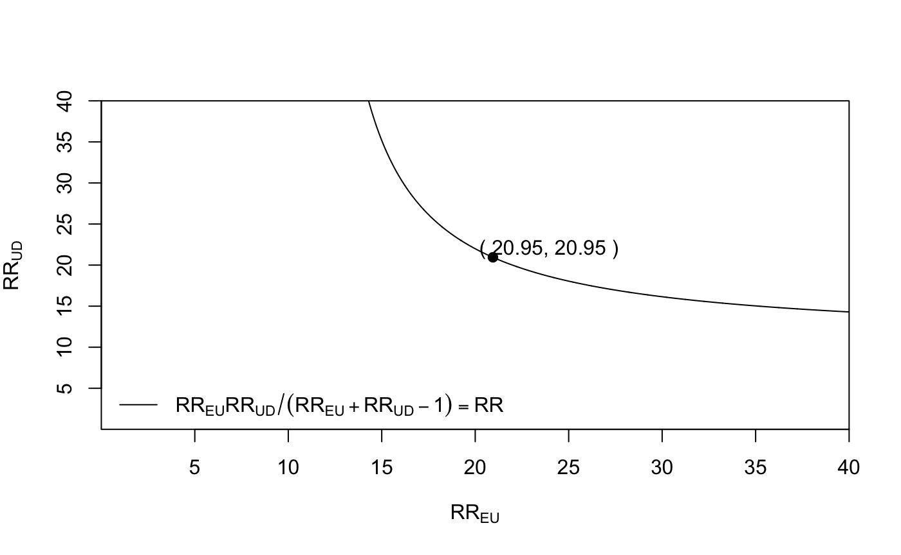
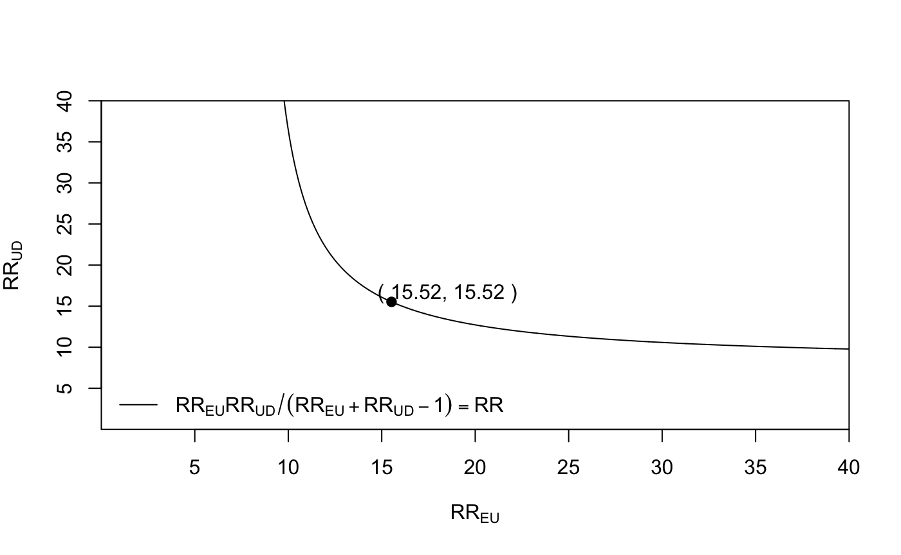

E-values for unmeasured confounding
unmeasured-confounding.RmdExamples from Sensitivity Analysis without Assumptions
Hammond and Horn1 estimated that cigarette smoking increased the risk of lung cancer by more than 10-fold. Fisher proposed that genetic confounding may explain all of the apparent association.2 We can calculate the magnitude of confounding that would be necessary to fully explain the estimated risk ratio of 10.73 (95% CI 8.02, 14.36):
evalues.RR(est = 10.73, lo = 8.02, hi = 14.36)
#> point lower upper
#> RR 10.73000 8.02000 14.36
#> E-values 20.94777 15.52336 NAThe E-value of 20.95 tells us that a confounder, or set of confounders, such as that proposed by Fisher, would have to be associated with a 20-fold increase in the risk of lung cancer, and must be 20 times more prevalent in smokers than non-smokers, to explain the observed risk ratio. If the strength of one of these relationships were weaker, the other would have to be stronger for the causal effect of smoking on lung cancer to be truly null.
To see how the magnitude of the exposure-confounder and the confounder-outcome relationships would have to vary to fully explain the observed assocation, we can use the bias_plot() function:
bias_plot(10.73, xmax = 40)

This tells us, for example, that if the exposure-confounder parameter (\(RR_{EU}\)) were 15, meaning that the confounder(s) is 15 times more likely among smokers, the (\(RR_{UD}\)) parameter would have to be about 40 for it to even be possible that confounding explains the entire observed association.
We could also plot the lower bound of the confidence interval, which we calculated an E-value of 15.52 for above.
bias_plot(8.02, xmax = 40)

We can also calculate an E-value for shifting an estimate to a number other than the null. For example to reduce an observed relative risk of 2.5 to a true causal relative risk of 1.5, the E-value is:
# summary() used to print the E-value only summary(evalues.RR(est = 2.5, true = 1.5))
#> [1] 2.720759Examples from Sensitivity Analysis in Observational Research: Introducing the E-value
A study by Victora et al. examing the relationship between breastfeeding and infant death by respiratory infection, finding that mortality was increased by a factor of 3.9 (95% CI 1.8, 8.7) among infants with with only formula.3 However, smoking, which was not assessed in this study, may be a confounder. We can calculate E-values for the point estimate and the confidence interval:
evalues.OR(est = 3.9, lo = 1.8, hi = 8.7, rare = TRUE)
#> point lower upper
#> RR 3.900000 1.8 8.7
#> E-values 7.263034 3.0 NAWe can also plot the magnitude of each of the parameters that would be required to explain away the point estimate:
bias_plot(3.9, xmax = 20)

The next example concerns a study by the Agency for Healthcare Research and Quality, which found that breastfeeding decreased the risk of childhood leukemia.4 The article reported an RR of 0.80 (95 % CI 0.71, 0.91). This example demonstrates that we can calculate E-values for protective factors as well.
evalues.RR(est = 0.80, lo = 0.71, hi = 0.91)
#> point lower upper
#> RR 0.800000 0.71 0.910000
#> E-values 1.809017 NA 1.428571Hammond EC, Horn D. Smoking and death rates: report on forty four months of follow-up of 187,783 men. J Am Med Assoc. 1958;166:1159– 1172, 1294–1308.↩︎
Fisher RA. Dangers of cigarette smoking [letter]. Brit Med J. 1957;2:297– 298.↩︎
Victora CG, Smith PG, Vaughan JP, Nobre LC, Lombardi C, Teix- eira AM, et al. Evidence for protection by breast-feeding against in- fant deaths from infectious diseases in Brazil. Lancet. 1987;2:319-22.↩︎
Ip S, Chung M, Raman G, Chew P, Magula N, DeVine D, et al. Breastfeeding and Maternal and Infant Health Outcomes in Devel- oped Countries. Evidence Report/Technology Assessment no. 153. (Prepared by Tufts-New England Medical Center Evidence-based Practice Center under contract no. 290-02-0022.) AHRQ publication no. 07-E007. Rockville: Agency for Healthcare Research and Quality; April 2007.↩︎